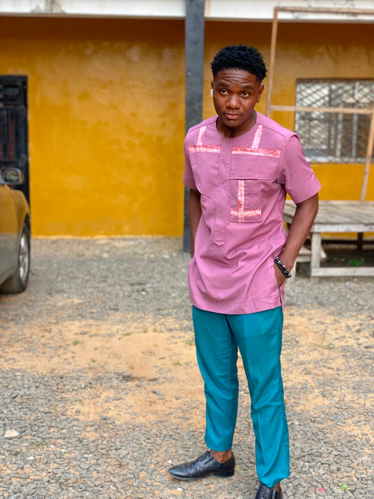

IT Support Specialist
Creative World Digital Arts Space | Feb 2023 – Present
- Diagnosed and resolved hardware, software, and network issues.
- Maintained computer labs and audiovisual equipment.
- Provided technical support to staff and instructors.

Montserrado County, Liberia | IT Support Specialist & Digital Marketer
Email: obediahboakai292@gmail.com | Phone: +231 777 884 967
Motivated and detail-oriented professional with over 3 years of experience in IT support, digital marketing, and content creation. Passionate about leveraging technology to solve problems and contribute to national development in Liberia.
| School | Qualification | Year |
|---|---|---|
| Starz University | BSc Computer Science (In Progress) | Present |
| Carolyn Mesick School System | High School Diploma (WASSCE) | 2021 |
Creative World Digital Arts Space | Feb 2023 – Present
Winners INC | Jan 2024 – Aug 2025